bienvenido a
nuestro website
Familiarícese con nuestra oferta
Leer más
| 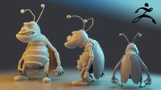 | Cartoon para Prodalucción (Vol. 1) Bienvenidos, les presento la oportunidad de realizar en Zbrush un personaje (cucaracha) estilo cartoon semi-realista, para una producción audiovisual en la ... |
| 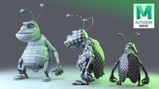 | Cartoon para Prodalucción (Vol. 2) Bienvenidos, les presento la oportunidad de realizar en Zbrush un personaje (cucaracha) estilo cartoon semi-realista, para una producción audiovisual en la ... |
| Cartoon para Prodalucción (Vol. 3) Bienvenidos, les presento la oportunidad de realizar en Zbrush un personaje (cucaracha) estilo cartoon semi-realista, para una producción audiovisual en la ... | |
| 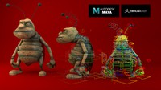 | Cartoon para Prodalucción (Vol. 4) Bienvenidos, les presento la oportunidad de realizar en Zbrush un personaje (cucaracha) estilo cartoon semi-realista, para una producción audiovisual en la ... |
| 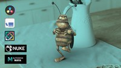 | Cartoon para Prodalucción (Vol. 5) Bienvenido a la última entrega de esta Colección: "Cartoon para Producción", donde realizaremos un Comercial para Televisión. |
| 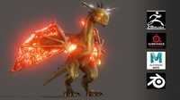 | Dragón Hiperreal para Film o Game e Inducción a Blender Una de las principales preocupaciones en nuestros proyectos es el tiempo de render. Este curso fue pensado |
| Rigging Facial estilo Cartoon en Maya En este curso aprenderás a hacer un rigging facial, dotándo a un rostro de los controles necesarios para poder inyectarle animación y tener completo control de ... |
|
| 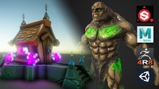 | Pipeline game con Substance, Maya, Zbrush y Unity En este curso aprenderás todo el pipeline completo en la creación de Assets y Personajes para juegos... |
| Integración CGI con Nuke + 3dsMax Hardsurface + V-ray + HDRI
Cuando trabajamos en la producción de un video 3d para televisión o cine. El hecho de saber... | |
| 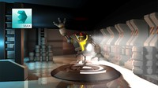 | Aprende 3ds Max desde cero a Profesional En este curso aprenderás a manejar desde cero el software. Desde lo mas básico hasta la creación de un escenario y un personaje... |
| 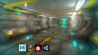 | Pipeline game con Substance, Maya, Zbrush y Unity ELos videojuegos y ahora la Realidad Virtual, se consideraban temas del futuro, pero es evidente que ya los tenemos aqui en el presente y debemos prepararnos para poder afrontar la creación de estos mundos increibles... |
| 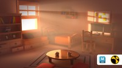 | Iluminación en Maya con Arnold En mis cursos siempre he abordado temas de rigging, modelado y animación, pero hay un area que le hemos prestado menos atención y por la cuel cree... |
| 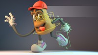 | 3dsmax para Producción Audiovisual Bienvenidos a una nueva entrega de un Curso en 3ds Max. En este caso haremos todo lo necesario para crear un Personaje para Producción Audiovisual, en el que podremos estiralo ... |
| 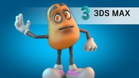 | 3dsmax para Producción Audiovisual (Vol. 2) Bienvenidos! Aprendiste a crear un personaje 3d en el primer Volúmen? Muy bien excelente! Pero quieres aprender a animarlo? Quieres que la iluminación del personaje lo destaque? Y lo mejor aun, poder rendirlo en Vray con sus... |
| Dibuja y Esculpe tu COVID para Impresión 3d en Blender 2.8X Te gustaria poder dibujar tus propios conceptos y esculpirlos en un software muy potente en el mercado de costo gratuíto, cuyo software no pesa más de 200MB, rápido de descargar ... | |
| Cartoon para Prodalucción (Vol. 1) Bienvenidos, les presento la oportunidad de realizar en Zbrush un personaje (cucaracha) estilo cartoon semi-realista, para una producción audiovisual en la ... |
| Cartoon para Prodalucción (Vol. 2) Bienvenidos, les presento la oportunidad de realizar en Zbrush un personaje (cucaracha) estilo cartoon semi-realista, para una producción audiovisual en la ... |
| 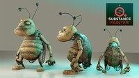 |
| Cartoon para Prodalucción (Vol. 3) Bienvenidos, les presento la oportunidad de realizar en Zbrush un personaje (cucaracha) estilo cartoon semi-realista, para una producción audiovisual en la ... |
| Cartoon para Prodalucción (Vol. 4) Bienvenidos, les presento la oportunidad de realizar en Zbrush un personaje (cucaracha) estilo cartoon semi-realista, para una producción audiovisual en la ... |
| Cartoon para Prodalucción (Vol. 5) Bienvenido a la última entrega de esta Colección: "Cartoon para Producción", donde realizaremos un Comercial para Televisión. |
| Dragón Hiperreal para Film o Game e Inducción a Blender Una de las principales preocupaciones en nuestros proyectos es el tiempo de render. Este curso fue pensado |
| Rigging Facial estilo Cartoon en Maya En este curso aprenderás a hacer un rigging facial, dotándo a un rostro de los controles necesarios para poder inyectarle animación y tener completo control de ... |
| Pipeline game con Substance, Maya, Zbrush y Unity En este curso aprenderás todo el pipeline completo en la creación de Assets y Personajes para juegos... |
| 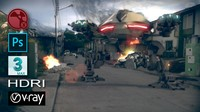 |
| Integración CGI con Nuke + 3dsMax Hardsurface + V-ray + HDRI
Cuando trabajamos en la producción de un video 3d para televisión o cine. El hecho de saber... |
| Aprende 3ds Max desde cero a Profesional En este curso aprenderás a manejar desde cero el software. Desde lo mas básico hasta la creación de un escenario y un personaje... |
| Pipeline game con Substance, Maya, Zbrush y Unity En este curso aprenderás todo el pipeline completo en la creación de Assets y Personajes para juegos... |
| Iluminación en Maya con Arnold En mis cursos siempre he abordado temas de rigging, modelado y animación, pero hay un area que le hemos prestado menos atención y por la cuel cree... |
| 3dsmax para Producción Audiovisual Bienvenidos a una nueva entrega de un Curso en 3ds Max. En este caso haremos todo lo necesario para crear un Personaje para Producción Audiovisual, en el que podremos estiralo ... |
| 3dsmax para Producción Audiovisual (Vol. 2) Bienvenidos! Aprendiste a crear un personaje 3d en el primer Volúmen? Muy bien excelente! Pero quieres aprender a animarlo? Quieres que la iluminación del personaje lo destaque? Y lo mejor aun, poder rendirlo en Vray con sus... |
| Dibuja y Esculpe tu COVID para Impresión 3d en Blender 2.8X Te gustaria poder dibujar tus propios conceptos y esculpirlos en un software muy potente en el mercado de costo gratuíto, cuyo software no pesa más de 200MB, rápido de descargar ... |